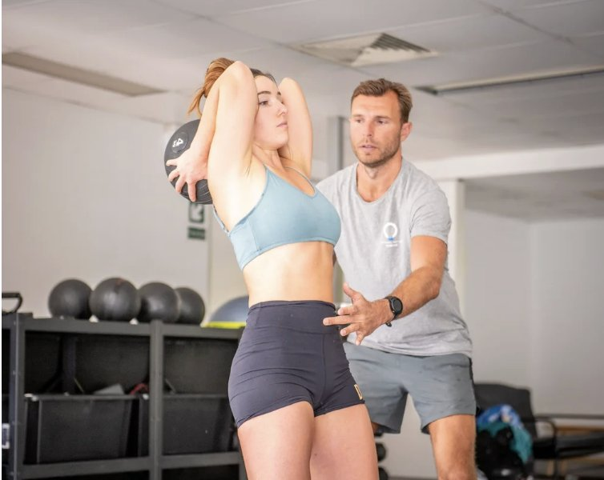

Feeling “off-balance” isn’t just a coordination issue — it’s a sign that your body has lost structural efficiency. Balance isn’t built by standing on one leg or stretching more. It’s created when your body learns to stabilise, breathe, and move as one unit.
A well-designed body balance workout doesn’t chase flexibility or fatigue. It teaches you to move efficiently — restoring symmetry, improving posture, and reducing tension throughout the body.
What Body Balance Really Means
True body balance is mechanical, not mystical. It’s how well your body distributes load through the spine, hips, and feet.
When posture and gait fall out of sync, one side overworks and the other underperforms — leading to tightness, pain, and instability.
Body balance exercises correct these imbalances by teaching coordination between the ribcage, pelvis, and limbs.
The goal isn’t to “feel the burn.” It’s to make movement effortless and controlled.

Traditional Group Workouts Tend to Focus on Flow & Flexibility Rather than Integration
Why Traditional Balance Classes Don’t Create Change
Many balance or mobility classes focus on repetition, flow, or flexibility — often reinforcing the same patterns that cause dysfunction.
Without retraining the sequence of movement itself, you’re stretching into misalignment instead of out of it.
We don’t stretch to fix imbalance. We reorganise the system.
That means training the brain and body to move symmetrically — retraining the muscles, fascia, and nervous system to work together instead of compensating.
The Core of Effective Body Balance Exercises
Functional balance begins with awareness. Each movement should integrate posture, breathing, and coordination — not isolate a single muscle.
Here’s how we rebuild stability and structure:
-
Ribcage–Pelvis Alignment – Teaches the trunk to stack efficiently, distributing force through the body rather than into one joint.
-
Single-Leg Stability Drills – Correct side dominance and strengthen your stance without compensating through the spine.
-
Controlled Rotational Work – Improves coordination through twisting movements that mirror real-life mechanics.
-
Breathing and Core Integration – Builds strength through structure, not tension.
-
Myofascial Release with Movement – Resets overworked tissues while teaching them to function correctly again.
Every exercise builds awareness and connection. You move less, but achieve more.
Building Functional Strength Through Balance
A body balance routine should reinforce posture and movement integrity — not chase intensity.
You’ll feel stronger, not just looser, because your joints finally align to share the workload evenly.
-
Wall Alignment Drill — Reintroduces neutral posture by reconnecting the head, ribs, and hips.
-
Split-Stance Hinge — Builds hip stability while maintaining spinal alignment.
-
Step-to-Rotate Sequence — Coordinates rotation across the body for balanced movement.
-
Core Engagement in Motion — Teaches control through walking, not just holding positions.
When balance is trained through structure, strength and mobility naturally follow.

Why Posture and Balance Are Connected
You can’t have good posture without balance — and you can’t have balance without posture.
When one collapses, the other compensates. Over time, this creates the chronic tightness and fatigue so many people mistake for “weakness.”
Body balance training rebuilds this connection by restoring your body’s ability to stabilise under gravity.
The outcome? Effortless posture, smoother gait, and reduced tension in the neck, back, and hips.
Restoring Balance That Lasts
Balance isn’t achieved by standing still — it’s achieved by teaching your body to adapt dynamically.
When trained correctly, your structure learns to organise itself in real-time, maintaining control even under load or movement.
That’s what separates functional balance from traditional exercise: precision over repetition, coordination over strain.

Want to Rebuild Your Balance from the Ground Up?
If you’ve been dealing with chronic tightness, poor posture, or asymmetry, now’s the time to retrain your structure.
THE Balance & Symmetry 6 Week Program
A corrective training series designed to help you restore alignment, stability, and confidence in how you move.
-
When: Thursdays, 5–6 pm
-
Start Date: 30 October 2025
-
Where: Functional Patterns Brisbane (in-studio)
-
Coach: Harj
-
Investment: $360 upfront (includes workbook + take-home program)
Over 6 weeks, you’ll retrain your body’s movement patterns using Functional Patterns methodology — addressing root asymmetries, not symptoms.
👉 Learn More or Secure Your Spot – Balance & Symmetry 6 Week Program
FAQs
Do I need experience?
No. The program is designed for anyone who feels off-balance, tight, or uneven and wants lasting results.
How is this different from a regular balance class?
This isn’t choreography or stretching — it’s structural retraining through biomechanics and precision.
Can this help posture and mobility?
Yes. Improved movement mechanics naturally enhance posture, coordination, and flexibility without forcing them.
Functional Patterns Brisbane
Movement-Based Rehabilitation | Posture Correction | Results That Last
Your body can move better. We’ll teach it how.